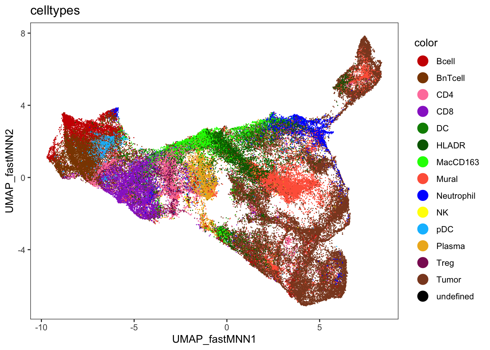
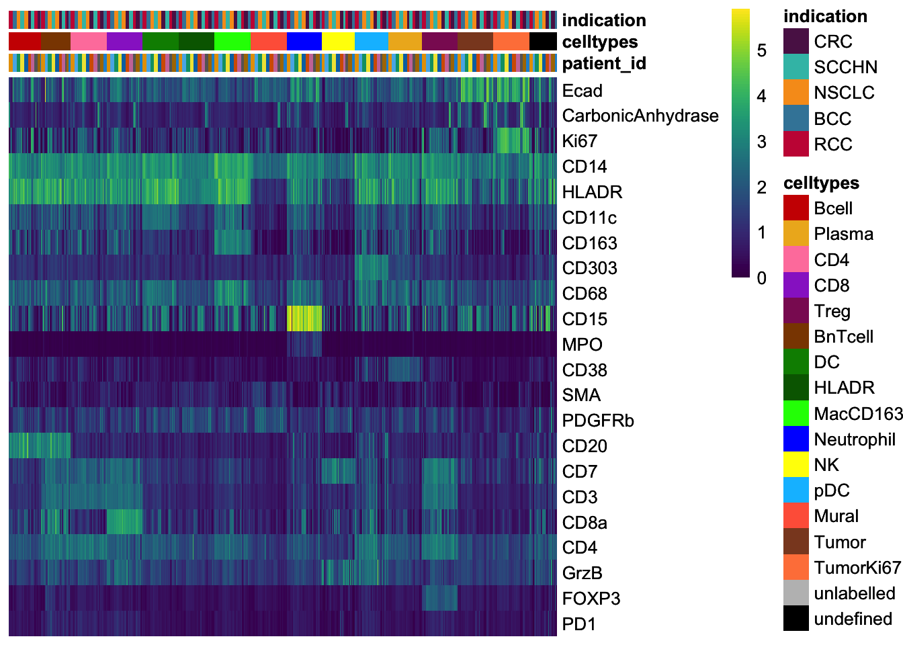
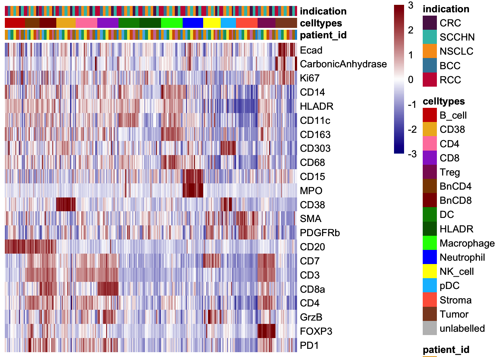

Last updated: 2022-05-05
Checks: 6 1
Knit directory: Analysis/
This reproducible R Markdown analysis was created with workflowr (version 1.7.0). The Checks tab describes the reproducibility checks that were applied when the results were created. The Past versions tab lists the development history.
The R Markdown file has unstaged changes. To know which version of
the R Markdown file created these results, you’ll want to first commit
it to the Git repo. If you’re still working on the analysis, you can
ignore this warning. When you’re finished, you can run
wflow_publish to commit the R Markdown file and build the
HTML.
Great job! The global environment was empty. Objects defined in the global environment can affect the analysis in your R Markdown file in unknown ways. For reproduciblity it’s best to always run the code in an empty environment.
The command set.seed(20220321) was run prior to running
the code in the R Markdown file. Setting a seed ensures that any results
that rely on randomness, e.g. subsampling or permutations, are
reproducible.
Great job! Recording the operating system, R version, and package versions is critical for reproducibility.
Nice! There were no cached chunks for this analysis, so you can be confident that you successfully produced the results during this run.
Great job! Using relative paths to the files within your workflowr project makes it easier to run your code on other machines.
Great! You are using Git for version control. Tracking code development and connecting the code version to the results is critical for reproducibility.
The results in this page were generated with repository version 9fbdaac. See the Past versions tab to see a history of the changes made to the R Markdown and HTML files.
Note that you need to be careful to ensure that all relevant files for
the analysis have been committed to Git prior to generating the results
(you can use wflow_publish or
wflow_git_commit). workflowr only checks the R Markdown
file, but you know if there are other scripts or data files that it
depends on. Below is the status of the Git repository when the results
were generated:
Ignored files:
Ignored: .DS_Store
Ignored: IMC/.DS_Store
Ignored: IMC/Analysis/.DS_Store
Ignored: IMC/Analysis/.Rproj.user/
Ignored: IMC/Analysis/analysis/.DS_Store
Ignored: comparisons/.DS_Store
Ignored: comparisons/.Rproj.user/
Ignored: comparisons/analysis/.DS_Store
Ignored: mIF/.DS_Store
Ignored: mIF/Analysis/.Rproj.user/
Ignored: mIF/Analysis/analysis/.DS_Store
Unstaged changes:
Modified: IMC/Analysis/analysis/01_read_data.Rmd
Modified: IMC/Analysis/analysis/02_spillover_correction.Rmd
Modified: IMC/Analysis/analysis/03_quality_control.Rmd
Modified: IMC/Analysis/analysis/07_predict_celltypes.Rmd
Note that any generated files, e.g. HTML, png, CSS, etc., are not included in this status report because it is ok for generated content to have uncommitted changes.
These are the previous versions of the repository in which changes were
made to the R Markdown
(IMC/Analysis/analysis/07_predict_celltypes.Rmd) and HTML
(IMC/Analysis/docs/07_predict_celltypes.html) files. If
you’ve configured a remote Git repository (see
?wflow_git_remote), click on the hyperlinks in the table
below to view the files as they were in that past version.
| File | Version | Author | Date | Message |
|---|---|---|---|---|
| Rmd | c22d4e1 | nilseling | 2022-04-29 | Added more projects |
Here, we will use the previously trained random forest classifier to predict all unlabelled cells.
First, we will read in the SingleCellExperiment object and load all libraries.
library(caret)
library(scater)
library(tidyverse)
library(dittoSeq)
library(viridis)
library(doParallel)
sce <- readRDS("/Volumes/immucan_volume/processed_data/Panel_1/2022_WORKFLOW/IMC/Rout/sce.rds")
images <- readRDS("/Volumes/immucan_volume/processed_data/Panel_1/2022_WORKFLOW/IMC/Rout/images.rds")
masks <- readRDS("/Volumes/immucan_volume/processed_data/Panel_1/2022_WORKFLOW/IMC/Rout/masks.rds")
lab_sce <- sce[,sce$cell_labels != "unlabelled"]
unlab_sce <- sce[,sce$cell_labels == "unlabelled"]
rffit <- readRDS("/Volumes/immucan_volume/processed_data/Panel_1/2022_WORKFLOW/IMC/Rout/rf_classifier.rds")We will predict the labels of all other cells. For cell-type classification, we will use the method that was trained across all images.
# Add dummy variables
cur_mat <- t(assay(unlab_sce, "exprs")[!grepl("DNA|Histone", rownames(unlab_sce)),])
dummies <- dummyVars(sample_id ~ indication, data = colData(unlab_sce))
all_dummies <- predict(dummies, newdata = colData(unlab_sce))
cur_mat <- cbind(cur_mat, all_dummies)
cell_labels.class <- as.character(predict.train(rffit,
newdata = cur_mat,
type = "raw"))
names(cell_labels.class) <- rownames(cur_mat)
cell_labels.prob <- predict.train(rffit,
newdata = cur_mat,
type = "prob")Store predictions in SCE object. We will not overwrite the labels of the already labelled cells.
cell_labels <- sce$cell_labels
cell_labels[colnames(unlab_sce)] <- cell_labels.class
sce$celltypes <- cell_labels
cur_probs <- matrix(NA, ncol = ncol(cell_labels.prob), nrow = ncol(sce))
rownames(cur_probs) <- colnames(sce)
colnames(cur_probs) <- colnames(cell_labels.prob)
cur_probs[rownames(cell_labels.prob),] <- as.matrix(cell_labels.prob)
sce$probabilities <- DataFrame(cur_probs)Here, we will visualize the predicted cell-types and their associated classification probabilities per indication.
First, we will plot the class labels on the batch corrected tSNEs.
library(dittoSeq)
dittoDimPlot(sce, reduction.use = "UMAP_fastMNN", var = "celltypes", size = 0.2) +
scale_color_manual(values = metadata(sce)$colour_vectors$cell_types)
Finally, we will visualize the marker expression per cell type using the classified cells.
unlab_sce <- sce[,sce$cell_labels == "unlabelled"]
agr_sce <- aggregateAcrossCells(unlab_sce,
ids = colData(unlab_sce)[,c("sample_id", "celltypes")],
statistics = "mean")
assay(agr_sce, "exprs") <- asinh(counts(agr_sce))
colnames(agr_sce) <- paste0(agr_sce$sample_id, "_",
agr_sce$celltypes)
# Define markers that were used for gating
cur_markers <- c("Ecad", "CarbonicAnhydrase", "Ki67", "CD14", "HLADR",
"CD11c", "CD163", "CD303", "CD68", "CD15", "MPO", "CD38",
"SMA", "PDGFRb", "CD20", "CD7", "CD3", "CD8a", "CD4", "GrzB", "FOXP3", "PD1")
# Non-scaled
dittoHeatmap(agr_sce[cur_markers,], assay = "exprs",
annot.by = c("patient_id", "celltypes", "indication"),
cluster_rows = FALSE,
scale = "none", heatmap.colors = viridis(100), order.by = "celltypes",
annotation_colors = list(patient_id = metadata(sce)$colour_vectors$PatientIds,
celltypes = metadata(sce)$colour_vectors$cell_types,
indication = metadata(sce)$colour_vectors$Indication))
# Centered and scaled
dittoHeatmap(agr_sce[cur_markers,], assay = "exprs",
annot.by = c("patient_id", "celltypes", "indication"),
cluster_rows = FALSE, order.by = "celltypes",
annotation_colors = list(patient_id = metadata(sce)$colour_vectors$PatientIds,
celltypes = metadata(sce)$colour_vectors$cell_types,
indication = metadata(sce)$colour_vectors$Indication),
heatmap.colors = colorRampPalette(c("dark blue", "white", "dark red"))(100),
breaks = seq(-3, 3, length.out = 101))
Here, we will outline the cells of each cell type onto of composite images.
library(SingleCellExperiment)
library(cytomapper)
cell_types <- names(metadata(sce)$colour_vectors$cell_types)
cell_types <- cell_types[cell_types != "unlabelled"]
markers <- vector(mode = "list", length = length(cell_types))
names(markers) <- cell_types
markers[["B_cell"]] <- c("CD20", "CD3")
markers[["CD38"]] <- c("CD38")
markers[["CD4"]] <- c("CD4", "CD8a", "FOXP3")
markers[["BnCD4"]] <- c("CD20", "CD4","CD3")
markers[["CD8"]] <- c("CD4", "CD8a", "FOXP3")
markers[["BnCD8"]] <- c("CD20", "CD8a","CD3")
markers[["Treg"]] <- c("CD4", "CD8a", "FOXP3")
markers[["DC"]] <- c("CD11c", "CD68")
markers[["Macrophage"]] <- c("CD11c", "CD163")
markers[["HLADR"]] <- c("HLADR", "CD11c")
markers[["Neutrophil"]] <- c("CD15", "MPO")
markers[["NK_cell"]] <- c("CD7", "CD3")
markers[["pDC"]] <- c("CD303")
markers[["Stroma"]] <- c("SMA", "PDGFRb")
markers[["Tumor"]] <- c("Ecad", "CarbonicAnhydrase")Normalize the images.
# Exclude images
images <- images[!grepl("10072131|10074350", names(images))]
masks <- masks[!grepl("10072131|10074350", names(masks))]
images <- CytoImageList(images, on_disk = FALSE)
masks <- CytoImageList(masks, on_disk = FALSE)
images <- normalize(images, separateImages = TRUE)
images <- normalize(images, separateImages = TRUE,
inputRange = c(0, 0.2))Now, we will loop through the cell-types and indication.
for(j in unique(sce$celltypes)){
cur_sce <- sce[,sce$celltypes == j]
cur_markers <- markers[[j]]
if(dim(cur_sce)[2] == 0) {
next(j)
}
if (length(cur_markers) == 1) {
cur_col <- "red"
names(cur_col) <- j
cur_col <- list(cur_col)
names(cur_col) <- "celltypes"
plotPixels(image = images,
object = cur_sce,
mask = masks,
cell_id = "ObjectNumber",
img_id = "sample_id",
colour_by = cur_markers,
outline_by = "celltypes",
image_title = list(text = names(images),
cex = 1),
colour = cur_col,
save_plot = list(filename = paste0("/Volumes/immucan_volume/processed_data/Panel_1/2022_WORKFLOW/IMC/Rout/CellTypeValidation/",
j, ".png")))
} else {
plotPixels(image = images,
object = cur_sce,
mask = masks,
cell_id = "ObjectNumber",
img_id = "sample_id",
colour_by = cur_markers,
outline_by = "celltypes",
image_title = list(text = names(images),
cex = 1),
save_plot = list(filename = paste0("/Volumes/immucan_volume/processed_data/Panel_1/2022_WORKFLOW/IMC/Rout/CellTypeValidation/",
j, ".png")))
}
}To compare to mIF data, we will need to harmonize the cell types.
matched_celltype <- sce$celltypes
matched_celltype[matched_celltype %in% c("CD38", "HLADR", "Stroma", "pDC", "NK_cell")] <- "other"
matched_celltype[matched_celltype %in% c("Treg", "CD4", "CD8")] <- "Tcell"
matched_celltype[matched_celltype %in% c("BnCD4", "BnCD8")] <- "BnTcell"
matched_celltype[matched_celltype == "B_cell"] <- "Bcell"
sce$matched_celltype <- matched_celltypesaveRDS(sce, "/Volumes/immucan_volume/processed_data/Panel_1/2022_WORKFLOW/IMC/Rout/sce.rds")
sessionInfo()R version 4.1.3 (2022-03-10)
Platform: x86_64-apple-darwin17.0 (64-bit)
Running under: macOS Catalina 10.15.7
Matrix products: default
BLAS: /Library/Frameworks/R.framework/Versions/4.1/Resources/lib/libRblas.0.dylib
LAPACK: /Library/Frameworks/R.framework/Versions/4.1/Resources/lib/libRlapack.dylib
locale:
[1] en_US.UTF-8/en_US.UTF-8/en_US.UTF-8/C/en_US.UTF-8/en_US.UTF-8
attached base packages:
[1] parallel stats4 stats graphics grDevices utils datasets
[8] methods base
other attached packages:
[1] cytomapper_1.7.1 EBImage_4.36.0
[3] doParallel_1.0.17 iterators_1.0.14
[5] foreach_1.5.2 viridis_0.6.2
[7] viridisLite_0.4.0 dittoSeq_1.7.0
[9] forcats_0.5.1 stringr_1.4.0
[11] dplyr_1.0.9 purrr_0.3.4
[13] readr_2.1.2 tidyr_1.2.0
[15] tibble_3.1.6 tidyverse_1.3.1
[17] scater_1.22.0 scuttle_1.4.0
[19] SingleCellExperiment_1.16.0 SummarizedExperiment_1.24.0
[21] Biobase_2.54.0 GenomicRanges_1.46.1
[23] GenomeInfoDb_1.30.1 IRanges_2.28.0
[25] S4Vectors_0.32.4 BiocGenerics_0.40.0
[27] MatrixGenerics_1.6.0 matrixStats_0.62.0
[29] caret_6.0-92 lattice_0.20-45
[31] ggplot2_3.3.5 workflowr_1.7.0
loaded via a namespace (and not attached):
[1] utf8_1.2.2 shinydashboard_0.7.2
[3] tidyselect_1.1.2 htmlwidgets_1.5.4
[5] grid_4.1.3 BiocParallel_1.28.3
[7] pROC_1.18.0 munsell_0.5.0
[9] ScaledMatrix_1.2.0 codetools_0.2-18
[11] future_1.25.0 withr_2.5.0
[13] colorspace_2.0-3 highr_0.9
[15] knitr_1.39 rstudioapi_0.13
[17] listenv_0.8.0 labeling_0.4.2
[19] git2r_0.30.1 GenomeInfoDbData_1.2.7
[21] farver_2.1.0 pheatmap_1.0.12
[23] rhdf5_2.38.1 rprojroot_2.0.3
[25] parallelly_1.31.1 vctrs_0.4.1
[27] generics_0.1.2 ipred_0.9-12
[29] xfun_0.30 randomForest_4.7-1
[31] R6_2.5.1 ggbeeswarm_0.6.0
[33] rsvd_1.0.5 locfit_1.5-9.5
[35] bitops_1.0-7 rhdf5filters_1.6.0
[37] DelayedArray_0.20.0 assertthat_0.2.1
[39] promises_1.2.0.1 scales_1.2.0
[41] nnet_7.3-17 beeswarm_0.4.0
[43] gtable_0.3.0 beachmat_2.10.0
[45] globals_0.14.0 processx_3.5.3
[47] timeDate_3043.102 rlang_1.0.2
[49] systemfonts_1.0.4 splines_4.1.3
[51] ModelMetrics_1.2.2.2 broom_0.8.0
[53] yaml_2.3.5 reshape2_1.4.4
[55] abind_1.4-5 modelr_0.1.8
[57] backports_1.4.1 httpuv_1.6.5
[59] tools_4.1.3 lava_1.6.10
[61] ellipsis_0.3.2 raster_3.5-15
[63] jquerylib_0.1.4 RColorBrewer_1.1-3
[65] ggridges_0.5.3 Rcpp_1.0.8.3
[67] plyr_1.8.7 sparseMatrixStats_1.6.0
[69] zlibbioc_1.40.0 RCurl_1.98-1.6
[71] ps_1.7.0 rpart_4.1.16
[73] cowplot_1.1.1 haven_2.5.0
[75] ggrepel_0.9.1 fs_1.5.2
[77] magrittr_2.0.3 data.table_1.14.2
[79] reprex_2.0.1 whisker_0.4
[81] hms_1.1.1 mime_0.12
[83] evaluate_0.15 fftwtools_0.9-11
[85] xtable_1.8-4 jpeg_0.1-9
[87] readxl_1.4.0 gridExtra_2.3
[89] compiler_4.1.3 crayon_1.5.1
[91] htmltools_0.5.2 later_1.3.0
[93] tzdb_0.3.0 tiff_0.1-11
[95] lubridate_1.8.0 DBI_1.1.2
[97] dbplyr_2.1.1 MASS_7.3-55
[99] Matrix_1.4-1 cli_3.3.0
[101] gower_1.0.0 pkgconfig_2.0.3
[103] getPass_0.2-2 sp_1.4-7
[105] terra_1.5-21 recipes_0.2.0
[107] xml2_1.3.3 svglite_2.1.0
[109] vipor_0.4.5 bslib_0.3.1
[111] hardhat_0.2.0 XVector_0.34.0
[113] prodlim_2019.11.13 rvest_1.0.2
[115] callr_3.7.0 digest_0.6.29
[117] rmarkdown_2.14 cellranger_1.1.0
[119] DelayedMatrixStats_1.16.0 shiny_1.7.1
[121] lifecycle_1.0.1 nlme_3.1-157
[123] jsonlite_1.8.0 Rhdf5lib_1.16.0
[125] BiocNeighbors_1.12.0 fansi_1.0.3
[127] pillar_1.7.0 fastmap_1.1.0
[129] httr_1.4.2 survival_3.3-1
[131] glue_1.6.2 svgPanZoom_0.3.4
[133] png_0.1-7 class_7.3-20
[135] stringi_1.7.6 sass_0.4.1
[137] HDF5Array_1.22.1 nnls_1.4
[139] BiocSingular_1.10.0 irlba_2.3.5
[141] future.apply_1.9.0